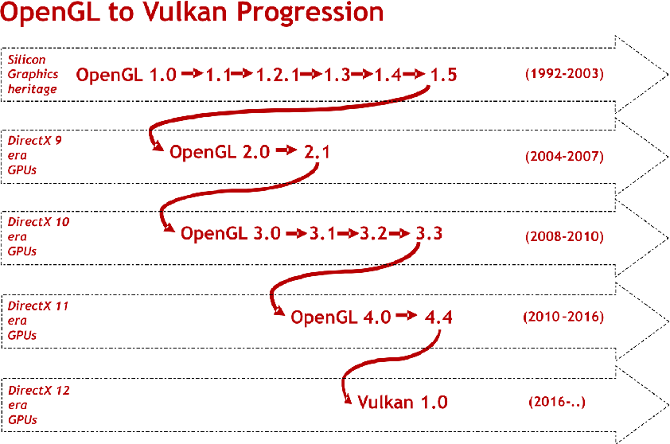

计算机图形学
第二章 图形学编程
OpenGL发展史
OpenGL发展史
API早期发展(IFIPS)
- 国际信息处理联盟(IFIPS)1973年成立了两个委员会，提出了一套图形学标准，称为图形核心标准(Graphical Kernel System, GKS)，其核心为2D，适用于工作站处理，该标准于80年代被ISO和ANSI接受
- 但由于该标准发展远落后于硬件发展，GKS很难扩展到3D
OpenGL发展史
API早期发展(PHIGS和X)
- 面向编程的导铧图形系统(Programmers Hierachical Graphics System, PHIGS)，由CAD社区提出，将具有图形信息的模型保存在数据库中
- X窗口系统，是由DEC和MIT合作提出的，采用了客户端--服务器的体系架构提供对图形计算的支持
- PEX将上面两者结合起来，但因为也同时结合了二者的缺点，导致应用成本较高，难以得到推广
OpenGL发展史
API早期发展(SGI和GL)
- 硅谷图形公司(Sillicon Graphics, SGI)创造性地于1982年在图形工作站上实现了硬件流水线，为应用程序开发提供了名为GL(Graphics Library)的库访问底层系统功能
- GL库的发布极大地简化了三维交互应用程序的开发，降低了开发成本和难度
OpenGL发展史
API早期发展(OpenGL)
OpenGL发展史
OpenGL演变
OpenGL最初由建筑评审委员会(Architectural Review Board, ARB)所控制，其成员包括了SGI, Microsoft, NVidia, HP, 3DLabs, IBM等，目前OpenGL由Khronos Group所负责
OpenGL的版本在2.5以前发展基本稳定，具有良好的版本向下兼容性，版本的发展主要为体现新的硬件技术进步，如支持三维纹理映射、纹理对象、顶点和面片程序等，并能通过扩展提供为特定硬件平台的支持
OpenGL发展史
OpenGL演变
Benjamin Kenwright. 2017. Getting started with computer graphics and the vulkan API. In SIGGRAPH Asia 2017 Courses (SA '17). Association for Computing Machinery, New York, NY, USA, Article 5, 1–86. DOI:https://doi.org/10.1145/3134472.3136556
OpenGL发展史
当代OpenGL
当代OpenGL的性能主要是通过GPU而非CPU实现。可以通过对着色器编程实现对GPU的控制，应用程序的任务就是往GPU传递数据，GPU会负责所有的渲染工作

OpenGL发展史
图形渲染的两种模式
所有的模型均以顶点表示，顶点可构成基本图元，如线段、多边形、曲线、曲面等
即时模式(Immediate Mode)，应用程序定义每个顶点都会立即送到GPU中渲染，这种实现会造成CPU和GPU之间数据传输的瓶颈，在OpenGL3.1及以后的版本和OpenGL ES 2.0中删去
保有模式(Retained Mode)，所有顶点及其属性均保存在数组中，将数组传送给GPU进行渲染，但若需要更新，则需更新所有数组中的内容并再次传递给GPU。对于重复渲染，传递数组并储存在GPU中的方式显然效率更高
OpenGL发展史
OpenGL3.1
OpenGL3.1版本完全基于着色器，并未提供默认的着色器程序，每个应用程序均需提供点元着色器和面片着色器程序
不再提供即时模式，并减少了状态变量的数目
不再提供对于大部分2.5版本函数的支持，也不再需要向下兼容，但还是存在兼容性扩展